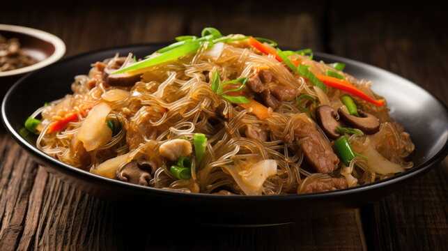
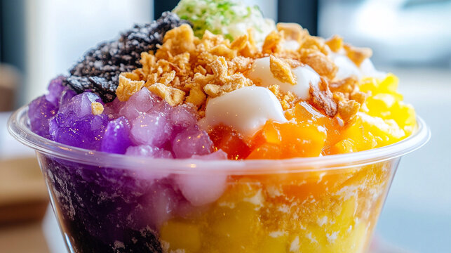

Featured Recipes

Chicken Adobo
History: Adobo is often referred to as the unofficial national dish of the Philippines. Its origins trace back to pre-colonial times when early Filipinos preserved meat in vinegar and salt. The Spanish later introduced soy sauce, creating the flavorful combination we enjoy today.
This dish remains a staple in Filipino households for its simplicity, bold flavors, and long shelf life, especially in tropical climates.
This classic Filipino dish features chicken braised in a tangy soy sauce and vinegar. Adobo reflects the history of the Philippines and its adaptability.

Pancit Bihon
History: Pancit (meaning "noodles" in Chinese Hokkien) was brought to the Philippines by Chinese immigrants during the Spanish colonial era. Over the years, the dish has evolved to incorporate local ingredients, making it a beloved part of Filipino celebrations and daily meals. [1]
Pancit Bihon is often served at birthdays and other gatherings as a symbol of long life and prosperity.
A flavorful noodle dish stir-fried with vegetables, chicken, and shrimp. Pancit is often served at celebrations as a symbol of long life and prosperity.

Halo-Halo
History: Halo-Halo (meaning "mix-mix" in Filipino) reflects the Philippines' rich history of trade and colonization. Influenced by Japanese kakigori (shaved ice) and local sweetened fruits, it became a unique dessert during the American colonial period. [2]
Today, it remains a favorite summer treat, showcasing the country's diverse culinary heritage.
Refreshing dessert of shaved ice, sweetened beans, fruits, and leche flan, Halo-Halo is the perfect treat for warm days in the Philippines.